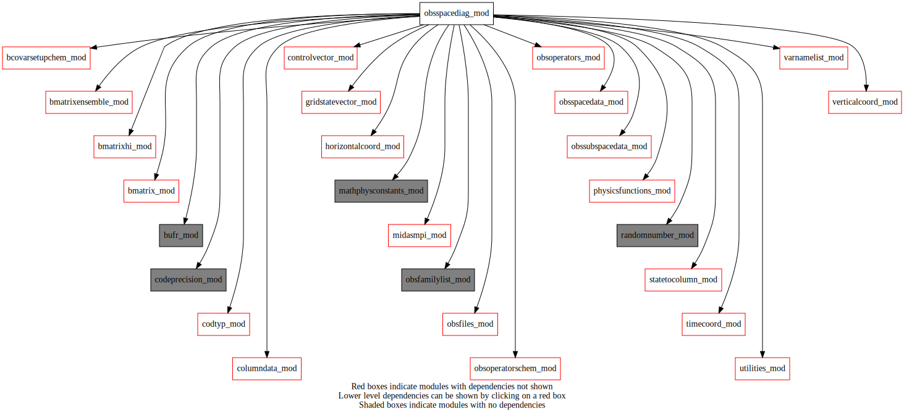

Dependency Diagrams:
 Direct Dependency Diagram¶
Reverse Dependency Diagram¶
Description
MODULE obsSpaceDiag_mod (prefix=”osd” category=’1. High-level functionality’)
- Purpose
Some experimental procedures for computing various diagnostics in observation space.
Quick access
- Routines
osd_calcinflation(),osd_getindices(),osd_obsdiagnostics(),osd_obspostproc(),osd_obsspace_diagn_add(),osd_obsspace_diagn_alloc(),osd_obsspace_diagn_dealloc(),osd_obsspace_diagn_init(),osd_obsspace_diagn_mpireduce(),osd_obsspace_diagn_print(),osd_obsspacediag(),osd_readsqrthpht(),osd_setup(),osd_update_obsfile()Needed modules
codeprecision_mod: MODULE codePrecision_mod (prefix=’pre’ category=’8. Low-level utilities and constants’)
midasmpi_mod: MODULE midasMpi_mod (prefix=’mmpi’ category=’8. Low-level utilities and constants’)
bufr_mod: MODULE bufr_mod (prefix=’bufr’ category=’8. Low-level utilities and constants’)
codtyp_mod: MODULE codtyp_mod (prefix=’codtyp’ category=’8. Low-level utilities and constants’)
mathphysconstants_mod: MODULE MathPhysConstants_mod (prefix=’mpc’ category=’8. Low-level utilities and constants’)
horizontalcoord_mod: MODULE HorizontalCoord_mod (prefix=’hco’ category=’7. Low-level data objects’)
timecoord_mod: MODULE timeCoord (prefix=’tim’ category=’7. Low-level data objects’)
controlvector_mod: MODULE controlVector_mod (prefix=’cvm’ category=’6. High-level data objects’)
obsspacedata_mod: MODULE obsSpaceData_mod (prefix=’obs’ category=’6. High-level data objects’)
columndata_mod: MODULE columnData_mod (prefix=’col’ category=’6. High-level data objects’)
verticalcoord_mod: MODULE verticalcoord (prefix=’vco’ category=’7. Low-level data objects’)
gridstatevector_mod: MODULE gridStateVector_mod (prefix=’gsv’ category=’6. High-level data objects’)
bmatrix_mod: MODULE BMatrix_mod (prefix=’bmat’ category=’2. B and R matrices’)
bmatrixhi_mod: MODULE BmatrixHI_mod (prefix=’bhi’ category=’2. B and R matrices’)
bmatrixensemble_mod: MODULE BmatrixEnsemble_mod (prefix=’ben’ category=’2. B and R matrices’)
bcovarsetupchem_mod: MODULE BCovarSetupChem_mod (prefix=’bcsc’ category=’6. High-level data objects’)
varnamelist_mod: MODULE varNameList (prefix=’vnl’ category=’7. Low-level data objects’)
statetocolumn_mod: MODULE stateToColumn (prefix=’s2c’ category=’4. Data Object transformations’)
randomnumber_mod: MODULE randomNumber_mod (prefix=’rng’ category=’8. Low-level utilities and constants’)
obsoperators_mod: MODULE obsOperators_mod (prefix=’oop’ category=’5. Observation operators’)
utilities_mod: MODULE utilities_mod (prefix=’utl’ category=’8. Low-level utilities and constants’)
physicsfunctions_mod: MODULE physicsFunctions_mod (prefix=’phf’ category=’8. Low-level utilities and constants’)
obssubspacedata_mod: MODULE obsSubSpaceData_mod (prefix=’oss’ category=’6. High-level data objects’)
obsfiles_mod: MODULE obsFiles_mod (prefix=’obsf’ category=’3. Observation input/output’)
obsoperatorschem_mod: MODULE obsOperatorsChem_mod (prefix=’oopc’ category=’5. Observation operators’)
obsfamilylist_mod: MODULE varNameList (prefix=’ofl’ category=’7. Low-level data objects’)Types
- type obsspacediag_mod/unknown_type¶
- Type fields
% allow_print_summary [logical ]
% assim_mode [logical ]
% counts (*,*,*) [integer ,allocatable]
% deltalat [real ]
% deltalogpressure [real ]
% deltalon [real ]
% diaghpht_stats (*,*,*,*) [real ,allocatable]
% diagr_stats (*,*,*,*) [real ,allocatable]
% jo_stats (*,*,*,*) [real ,allocatable]
% jpa_stats (*,*,*) [real ,allocatable]
% nbin [integer ]
% nlat [integer ]
% nlev [integer ]
% nlon [integer ]
% nstat [integer ]
% nstatus (*,*,*,*) [integer ,allocatable]
% obs_stats (*,*,*,*) [real ,allocatable]
% oma_stats (*,*,*,*) [real ,allocatable]
% omp_stats (*,*,*,*) [real ,allocatable]
Variables
Subroutines and functions
- subroutine obsspacediag_mod/osd_obsspacediag(obsspacedata, columntrlonanlinclev, hco_anl[, analysismode_opt])¶
- Purpose
Calls routines to perform observation-space diagnostic tasks
- Arguments
- obsSpaceData
Obs space data structure
- columnTrlOnAnlIncLev
Structure of vertical columns at obs locations. Expected to be for analysis vertical levels if to be used.
- analysisMode
logical indicating if following analysis mode or not (optional) Assumed .true. if not present.
- Arguments
obsspacedata [struct_obs ]
columntrlonanlinclev [struct_columndata ]
hco_anl [struct_hco ,pointer]
- Options
analysismode_opt [logical ,in,]
- Called from
- Call to
osd_setup(),tim_getdatestamp(),osd_obspostproc(),osd_calcinflation()
- subroutine obsspacediag_mod/osd_calcinflation(obsspacedata, columntrlonanlinclev, hco_anl, dateprnt)¶
- Purpose
Calculates observation-space diagnostics from random perturbations
- Arguments
obsspacedata [struct_obs ]
columntrlonanlinclev [struct_columndata ]
hco_anl [struct_hco ,pointer]
dateprnt [integer ]
- Called from
- Call to
obs_numbody(),col_setvco(),col_getvco(),col_allocate(),col_getnumcol(),gsv_allocate(),col_getnumlev(),cvm_subvectorexists(),cvm_getsubvector(),obs_famexist(),rng_setup(),rng_gaussian(),bhi_getscalefactor(),bcsc_getscalefactor(),bmat_sqrtb(),gsv_varexist(),vnl_varkindfromvarname(),gsv_getnumlev(),vnl_varlevelfromvarname(),s2c_tl(),oop_htl(),obs_bodyelem_r(),ben_getscalefactor(),col_deallocate(),gsv_deallocate(),obs_bodyelem_i(),osd_getindices(),utl_abort()
- subroutine obsspacediag_mod/osd_getindices(obsspacedata, bodyindex, latindex, lonindex, verticalindex)¶
- Arguments
obsspacedata [struct_obs ]
bodyindex [integer ]
latindex [integer ]
lonindex [integer ]
verticalindex [integer ]
- Called from
- Call to
obs_bodyelem_i(),obs_headelem_r(),obs_bodyelem_r(),obs_headelem_i(),codtyp_get_codtyp()
- subroutine obsspacediag_mod/osd_setup(nmlexists)¶
- Arguments
nmlexists [logical ]
- Called from
- Call to
- subroutine obsspacediag_mod/osd_update_obsfile(obsspacedata)¶
- Purpose
Update of obs file(s) for content other than OBS,OMA,OMP,OER,FGE,MRK in obsSpaceData Content can be augmented as needed.
- Arguments
obsspacedata [struct_obs ,inout]
- Called from
- Call to
- subroutine obsspacediag_mod/osd_obspostproc(obsspacedata, columntrlonanlinclev, deltalat, deltalon, deltapressure, anlm_mode)¶
- Purpose
Interface for observation-space post-processing procedures.
- Arguments
- obsSpaceData
Obs space data structure
- obsfam
Target obs family (e.g. CH)
- codtyplist
Code type list asscoiated to obsfam.
- columnTrlOnAnlIncLev
Columns from analysis vertical coordinate in obs space (at obs location)
- date
YYYYMMDDHH
- deltaLat
Size of latitude bins for diagnostics (degrees)
- deltaLon
Size of longitude bins for diagnostics (degrees)
- deltaPressure
Size of vertical bins for diagnostics (Pascal)
- Arguments
anlm_mode [logical ,in] :: Logical indicating if OmA (and Jo) diagnostics to be generated.
obsspacedata [struct_obs ]
columntrlonanlinclev [struct_columndata ]
deltalat [real ,in]
deltalon [real ,in]
deltapressure [real ,in]
- Called from
- Call to
obs_famexist(),oss_comboidlist(),codtyp_get_codtyp(),osd_obsdiagnostics(),osd_update_obsfile()
- subroutine obsspacediag_mod/osd_obsdiagnostics(obsspacedata, columntrlonanlinclev, obsfam, codtyplist, filename, save_diagn, deltalat, deltalon, deltapressure, pressmin, anlm_mode)¶
- Purpose
Calculates and prints observation-space diagnostics for chemical constituents
- Arguments
- obsSpaceData
Obs space data structure
- columnTrlOnAnlIncLev
Columns from analysis vertical coordinate in obs space (at obs location)
- Arguments
obsfam [character ] :: Obs family (e.g. ‘CH’ :codtypelist: Code type list
filename [character ] :: Output file name
save_diagn [logical ,in] :: Logical indicating gridded diagnostics are to be save :date: YYYYMMDDHH :deltaLat: Size of latitude bins for diagnostics (degrees) :deltaLon: Size of longitude bins for diagnostics (degrees) :deltaPressure: Size of vertical bins for diagnostics (Pascal)
pressmin [real ,in] :: bottom of top layer for diagnostics (in Pa).
anlm_mode [logical ,in] :: Logical indicating if OmA diagnostics are to be generated.
obsspacedata [struct_obs ]
columntrlonanlinclev [struct_columndata ]
codtyplist (*) [integer ,in]
deltalat [real ,in]
deltalon [real ,in]
deltapressure [real ,in]
- Output
Content of ascii file with obs space diagnostics
- Comments
Although Jo_analysis is already calculated in OBS_JOBS obsSpaceData and can be passed to osd_obsspace_diagn_add, it is recalculated in osd_obsspace_diagn_add since OBS_JOBS will be set to zero for diagnostic-only observations.
- Called from
- Call to
oss_get_comboidlist(),osd_readsqrthpht(),osd_obsspace_diagn_alloc(),osd_obsspace_diagn_init(),obs_getheaderindex(),obs_headelem_i(),obs_bodyelem_i(),obs_elem_c(),utl_stnid_equal(),obs_headelem_r(),oopc_diagnonly(),obs_bodyelem_r(),col_getnumlev(),col_getcolumn(),col_getpressure(),phf_convert_z_to_pressure(),osd_obsspace_diagn_add(),osd_obsspace_diagn_mpireduce(),osd_obsspace_diagn_print(),osd_obsspace_diagn_dealloc()
- subroutine obsspacediag_mod/osd_readsqrthpht(obsspacedata, obsfam, codtyplist, status_hpht)¶
- Purpose
Read background error std. dev. at obs locations from the obs files and store under OBS_HPHT in obsSpaceData
- Arguments
- obsSpaceData
Observation space data
- Arguments
obsfam [character ,in] :: Obs family. e.g. ‘CH’
codtyplist (*) [integer ] :: Code type list associated to obsfam
status_hpht [logical ,out] :: logical indicating if successfully retrieved sqrtHPHT from obs file
obsspacedata [struct_obs ,inout]
- Called from
- Call to
obsf_obssub_read(),oss_obsdata_dealloc(),obs_getheaderindex(),obs_headelem_i(),oss_obsdata_get_data1d(),obs_headelem_r(),obs_elem_c(),obs_bodyelem_i()
- subroutine obsspacediag_mod/osd_obsspace_diagn_alloc(obs_diagn, deltalat, deltalon, deltapressure, pressmin)¶
- Purpose
Allocates diagnostic arrays in obs_diagn.
- Arguments
- deltaLat
latitude bin size in degrees
- deltaLon
longitutde in degrees
- deltaPressure
pressures bin size in Pa (approximate)
- Arguments
pressmin [real ,in] :: bottom of top layer for diagnostics (in Pa).
obs_diagn [struct_osd_diagn ,inout]
deltalat [real ,in]
deltalon [real ,in]
deltapressure [real ,in]
- Called from
- subroutine obsspacediag_mod/osd_obsspace_diagn_init(obs_diagn)¶
- Purpose
Initializes diagnostic arrays in obs_diagn.
- Arguments
obs_diagn [struct_osd_diagn ,inout]
- Called from
- subroutine obsspacediag_mod/osd_obsspace_diagn_dealloc(obs_diagn)¶
- Purpose
Deallocates diagnostic arrays in obs_diagn.
- Arguments
obs_diagn [struct_osd_diagn ,inout]
- Called from
- subroutine obsspacediag_mod/osd_obsspace_diagn_add(obs_diagn, lat, lon, pressure, pressmin, omp, obs, sigma_obs, nlev_obs, unilevel, assim_obs, status[, oma_opt[, sqrthpht_opt]])¶
- Purpose
Adds an observation to the diagnostic arrays in obs_diagn.
- Arguments
- Arguments
lat [real ,in] :: latitude in degrees
lon [real ,in] :: longitutde in degrees
pressure (nlev_obs) [real ,in] :: pressures of the profile (Pa)
pressmin [real ,in] :: bottom of top layer for diagnostics (in Pa). :OmP: obs - background :OmA_opt: obs - analysis
obs (nlev_obs) [real ,in] :: observations :Jo: cost function
sigma_obs (nlev_obs) [real ,in] :: observation error standard deviation :sqrtHPHT_opt: forecast error standard deviation in obs space
assim_obs [logical ,in] :: indicates if the profile belongs to an assimilated data set
status (nlev_obs) [integer ,in] ::
indicates status of the observations, with values denoting:
0 - observation has been rejected and not included in diagnostics
1 - observation has been assimilated
2 - observation has been used for diagnostics only (not assimilated)
only observations with status=1,2 will be added to the statistic arrays
nlev_obs [integer ,in,] :: number of observations in the profile
unilevel [logical ,in] :: if the observation does not have a defined height coordinate
obs_diagn [struct_osd_diagn ,inout]
omp (nlev_obs) [real ,in]
oma_opt (nlev_obs) [real ,in,]
sqrthpht_opt (nlev_obs) [real ,in,]
- Called from
- subroutine obsspacediag_mod/osd_obsspace_diagn_mpireduce(obs_diagn)¶
- Purpose
Performs a MPI allreduce on diagnostic arrays in obs_diagn.
- Arguments
obs_diagn [struct_osd_diagn ,inout]
- Called from
- subroutine obsspacediag_mod/osd_obsspace_diagn_print(obs_diagn, filename, save_diagn, print_type, pressmin, status_hpht[, label_opt[, openfile_opt]])¶
- Purpose
Prints observation space diagnostics. If called with print_type = ‘stats’, the printed statistics will be added to the total diagnostic arrays.
- Arguments
- Arguments
filename [character ] :: output file name
save_diagn [logical ,in] :: Logical indicating gridded diagnostics are to be save
print_type [character ] ::
Specifies which statistics to print, with possible values:
’stats’ - prints statistics for the the arrays within obs_diagn
- ’summary’- prints total statistics held in the saved variables
within this subrouine
pressmin [real ] :: min pressure level for output
status_hpht [logical ,in] :: logical indicating if sqrtHPHT were available.
obs_diagn [struct_osd_diagn ,inout]
- Options
label_opt [character ,in,] :: label to print (only relevant if print_type = ‘stats’)
openfile_opt [logical ,in,] :: logical indicating if file filename is to be opened.
- Called from
- Call to
{kind=link}
{kind=link}